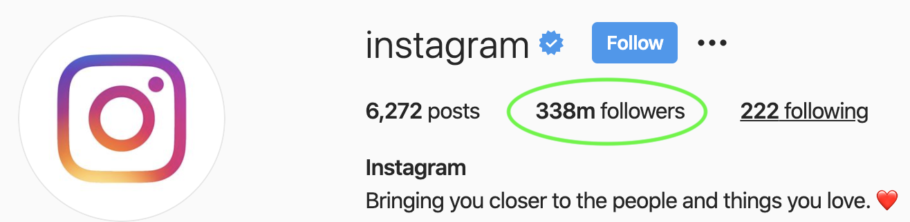
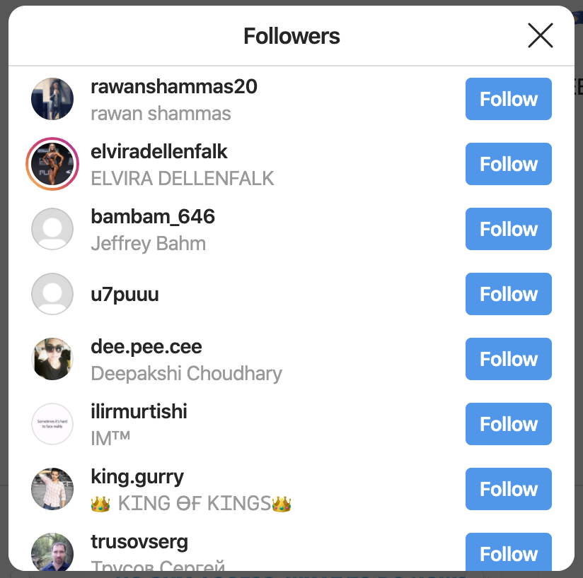
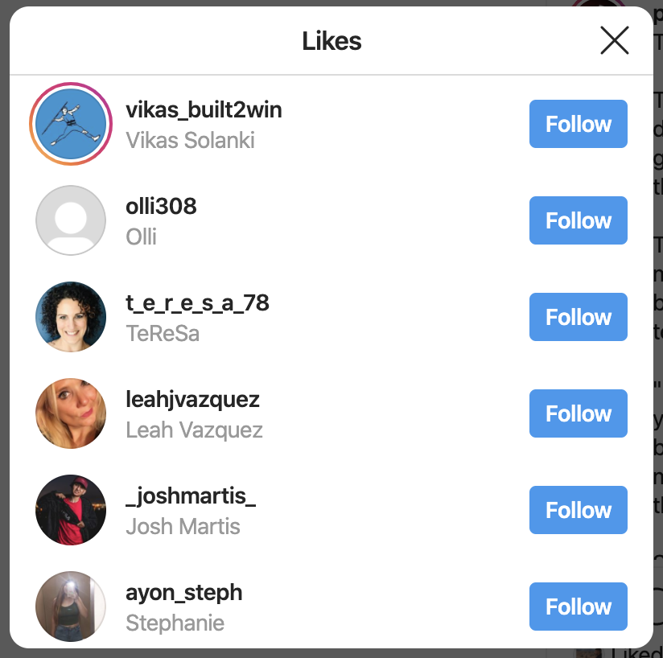
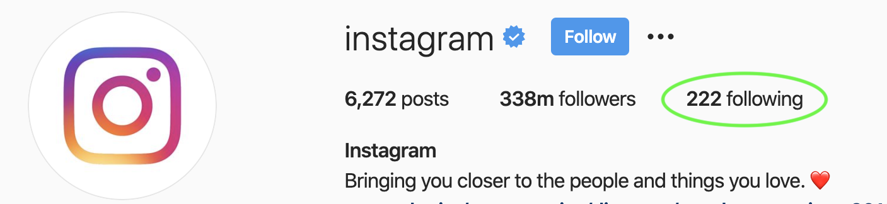
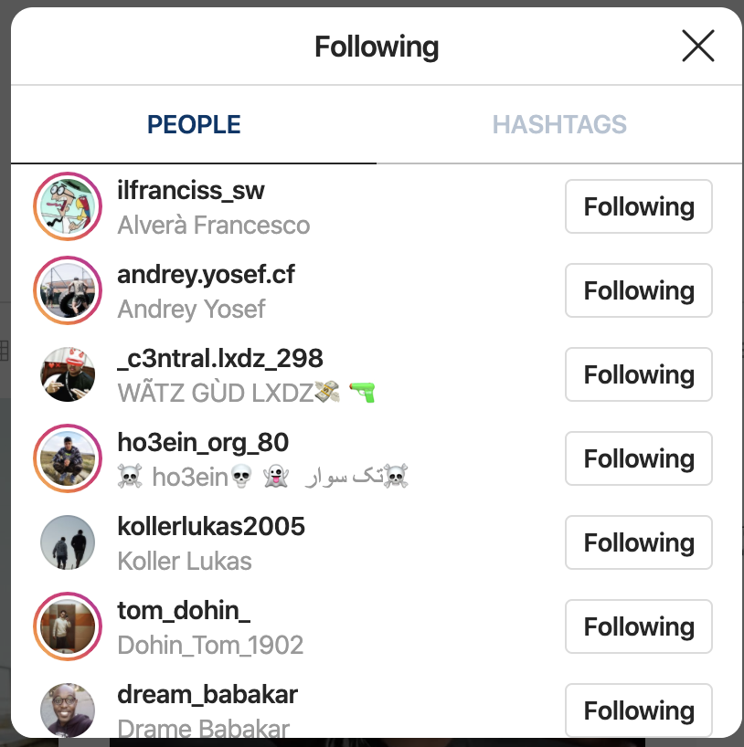

General Instructions
- Make sure you have a decent internet connection.
- Err on the side of caution when choosing your delay time.
- VERY IMPORTANT To make sure that the automated tasks still runs even when you are doing other
things on your computer,
run the extension in it's own browser window. (i.e. run Netflix, YouTube, Gmail whatever other tabs you
have to do in one window,
and the extension in another window)
Actions
Currently, the extension supports two automated tasks Follow and Unfollow
To automate Follow
-
First open up a list of Instagram users (either by looking at the list of users that follow another
profile or perhaps the list of users that has liked another profile's pictures)

- ...This should pop up a list of users like this


-
Open the extension side panel by clicking on the extension icon in the upper right hand extension bar.
-
On the extension panel enter the your preferred time delay between actions. Then click 'Start Follow'
(Make sure you see a popped up list of users before doing this)
To automate Unfollow
-
First open up the list of Instagram users that you have followed

-
...This should pop up a list of users like this

-
Open the extension, enter your preferred tiem delay, then click 'Start Unfollow'